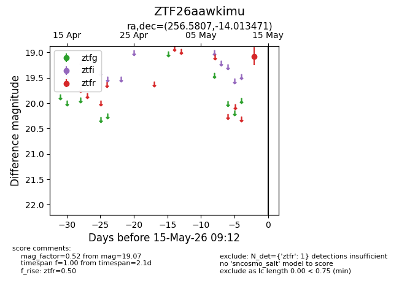
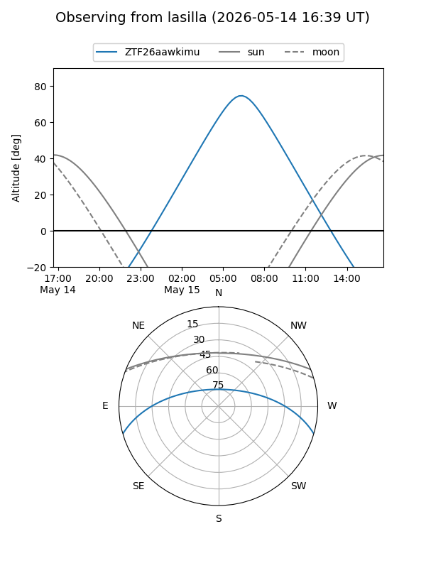
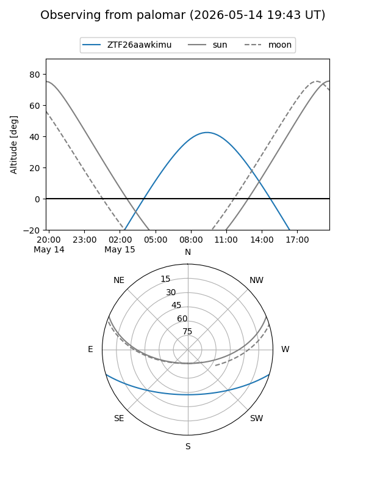

ZTF26aawkimu
Target ZTF26aawkimu at 2026-05-15 09:14
Aliases and brokers:
FINK: link
Lasair: link
ALeRCE: link
alt names
ZTF26aawkimu (ztf,fink_ztf)
Coordinates:
equatorial (ra, dec) = 256.5807,-14.01347
equatorial (HMS+DMS) = 17:06:19.37,-14:00:48.50
galactic (l, b) = (7.6237,+15.77670)
Flags:
Photometry:
last ztfr=19.07
1 ztfr detections
Lightcurve

Visibility


Additional plots